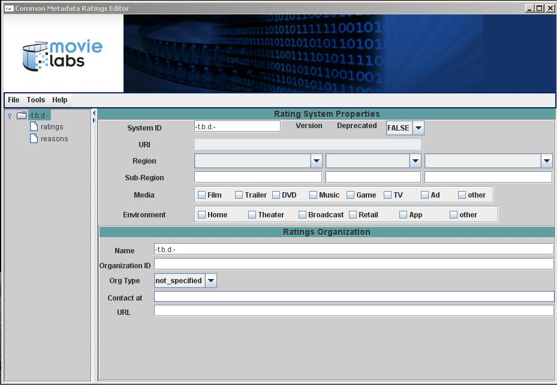
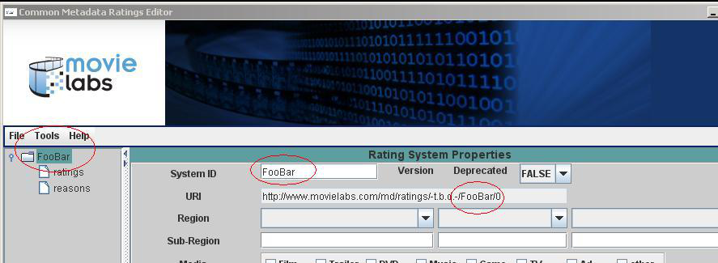
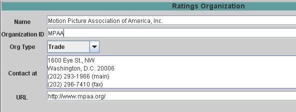

Use the File _> New.. menu item to create a new Rating System. The initial display will show an empty Rating Systems Properties panel:

This panel is used to enter the information pertaining to :
One of the field shown, the URI, is not editable. This field is automatically generated using the data specified for other fields.
The first step in filling in the required information is to enter a System ID (e.g., MPAA, OFLC, BBFA). Special characters should be avoided. Upon pressing Enter the new information is used to update both the URI field and navigation tree shown in the left-hand panel:

The next step is to enter at least one Region of usage. Up to three regions may be specified using the editor. If additional Regions are required they must be added by directly editing the XML file. Additional points to note are:
The figure below shows the result of specifying three regions of adoption, the first of which is limited to a specific sub-region (i.e., Alaska). Note that the URI has been modified to include the designator 'US' due to the specification of the United States as the first, and therefore primary, Region.

The "scope of usage" indicates the types of media the Rating System covers, as well as the applicable distribution modes. For example, one Rating System might be intended solely for broadcast TV while another is intended to apply to the retail sale of DVDs, games, and music. Selection is via the provided checkboxes and multiple selections may be made in either category.
The last step is to fill in information regarding the organization responsible for a system. This is optional but highly recommended. The following picture shows the entry for the MPAA:

| < Previous | Top | Next > |